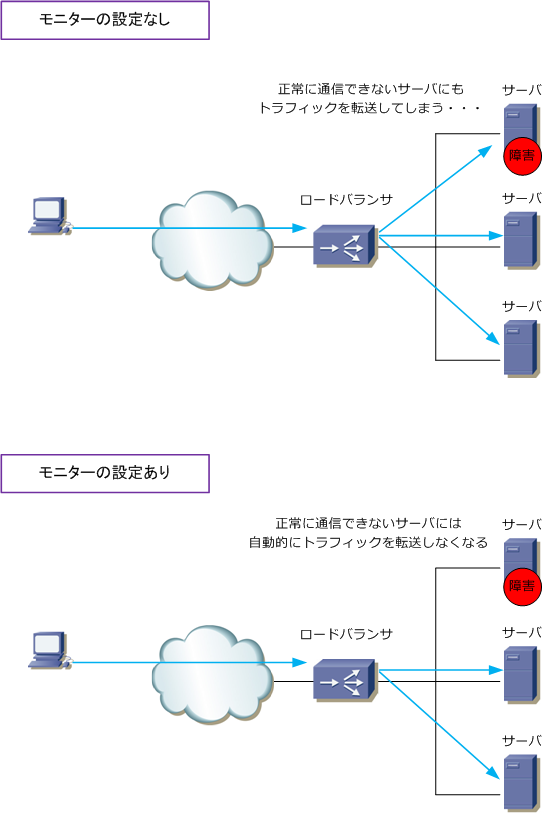

Load Balancer - Monitor
ロードバランサの重要な3つの機能
ロードバランサには色々な機能があります。また、ロードバランサがシングルの場合と冗長化の場合とでは 使用する機能も大きく異なってきます。ここではシングル構成や冗長化構成に関係なく、ロードバランサ導入 に際して必須知識のロードバラシング（負荷分散）、パーシステンス（セッション維持）、モニター（監視） の3つの重要な基本機能を紹介していきます。今回は、モニター（監視）の種類やパスチェックを紹介します。
ロードバランサ - モニター
モニターとは、サーバが正常に稼働してサービス提供が可能かどうかをロードバランサ ⇔ サーバ間でチェック する機能です。モニターはヘルスチェックとも呼ばれています。例えばTCPによるモニターのポーリングによる チェックで失敗したサーバには、自動的にトラフィックが転送されないようになります。これにより複数台ある サーバのいずれかで障害が発生しても、クライアントからのトラフィックは正常に他の実サーバへ転送されます。

以下のモニターの種類はF5の負荷分散装置（BIG-IP）で実装されている機能を紹介していますが、他メーカの ロードバランサも基本的には同じような機能をサポートしています。また、色々な種類がありますがサーバへの モニターにアドレスチェック（ L3チェック：ICMP ）はあまり使用されません。高価なロードバランサを導入 することからも最低でもサービスチェック（ L4チェック：TCP ）を使用するのが一般的。Internet回線冗長時 に通信経路の正常性を確認するパスチェックとして、TransparentモードでICMP Monitorはよく使用されます。
◇ Address Check ( アドレスチェック ) ◇ Service Check ( サービスチェック ) ◇ Content Check ( コンテンツチェック ) ◇ Interactive Check ( インタラクティブチェック )
| モニター種類 | 使用プロトコル例 | 説明 |
|---|---|---|
| Address Check | ICMP | サーバへIPパケットを送信してサーバの正常性を確認。 |
| Service Check | TCP | サーバにTCPコネクションのオープンとクローズを行うことで正常性を確認。 |
| Content Check | HTTP | サーバにTCPコネクションを開いて、Get等でデータ取得を行うことで正常性を確認。 |
| Interactive Check | FTP | サーバにTCPコネクションを開いて、実際のアプリケーションプロトコルのコマンドを 送信して受信の確認を行うことにより正常性を確認。SMTPの場合、Hello、PORTなど |
参考 ： Windowsサーバの NLB（Network Load Balancing）が推奨されない理由
NLBとは、Windowsサーバの持つ負荷分散機能のこと。NLBはWindows Server 2003から搭載されています。 NLBではサーバの物理IPアドレスとは別に共通の仮想IPアドレスを設定して、クライアントからのアクセスを 均等に分散させる機能（ラウンドロビン）。NLBには大きく以下の3つの問題点があります。Webアプリにより パーシステンス機能がないと上手く動作しないものもありシステムとしては致命的。また、ネットワーク障害 を正確に検知できなく可用性が低いことからも、サーバの負荷分散にはロードバランサ導入が必須と言えます。
NLBの問題点 1 ： 負荷分散方式の問題 ⇒ ロードバラシングの種類がラウンドロビンしか対応していないため、柔軟な負荷分散はできない。
NLBの問題点 2 ： パーシステンスの問題 ⇒ 同一のクライアントの連続したリクエストを同じサーバに転送できない。システムにより正常な通信不可。
NLBの問題点 3 ： 死活監視（ヘルスチェック）の問題 ⇒ NLBではネットワークアダプタレベルの問題しか検知できない。アプリケーションが正常に動作していない 場合においてもクライアントからのリクエストをそのサーバに転送してしまうため正常に通信できなくなる。